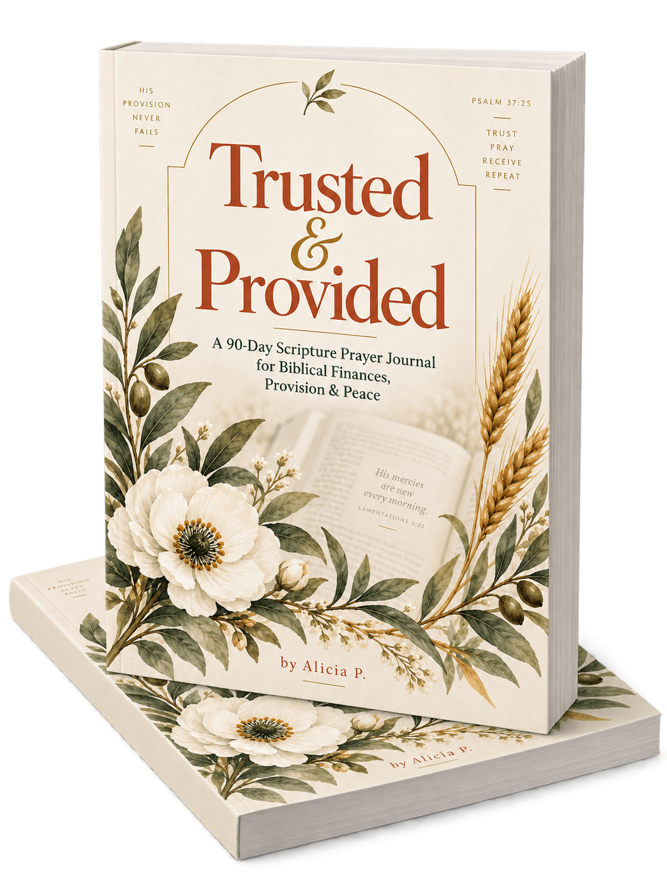

When the numbers don't make sense, bring the worry back to truth.
Trusted & Provided is a 90-day Scripture-centered prayer journal for the woman who loves God, wants to handle money wisely, and still has moments when financial uncertainty feels louder than peace.
You trust God.
You still have bills, decisions, and questions.
You know God has provided before, but an unexpected expense can still make your sense of financial safety wobble.
You pray about money, but sometimes what you need most isn't simply more money—it's wisdom about what to do next.
You want to be generous, but you're learning that helping someone does not always mean carrying every responsibility for them.
You want to handle what you have with integrity while also trusting God with the things you cannot control.
And sometimes your mind is already trying to solve six months from now before you've finished today's coffee.
Financial peace isn't pretending the numbers don't matter.
It's learning to face them with truth, wisdom, and trust.
Trusting God with money doesn't mean ignoring the practical.
Biblical financial peace can make room for both: honest prayer and thoughtful action. You can bring God the fear, the decisions, the generosity questions, the future plans, and the numbers themselves— then ask for wisdom about the next faithful step.
Scripture. Reflection. Journaling. One Peaceful Step.
Each day gives you a simple rhythm for bringing your financial life before God without pressure or performance.
-
Scripture
Begin with a carefully selected Bible verse that centers your heart in God's truth about provision, perspective, wisdom, and peace.
-
Reflection
Pause with gentle questions that connect Scripture to the real financial circumstances, beliefs, and decisions in front of you.
-
Journaling
Write honestly about the thoughts, prayers, worries, wins, needs, and hopes you're carrying. There is no perfect way to do it.
-
One Peaceful Step
End with one small, intentional action designed to bring more clarity, peace, and trust into your financial journey.
Not pressure.
Practice.
Over 90 days, Trusted & Provided gives you space to return to real financial questions with Scripture, honesty, wisdom, and one practical step at a time.
You love God—and money can still make your mind run ahead of you.
- You want a biblical perspective on finances without shame, pressure, or prosperity promises.
- You want to pray about money more honestly than simply asking God for more of it.
- You are navigating financial uncertainty, decisions, generosity, boundaries, or future planning.
- You want Scripture to shape how you think about provision, stewardship, wisdom, and peace.
- You appreciate having one small practical step to take after you pray and reflect.
This isn't about pretending money doesn't matter—or using prayer as a formula for financial results.
It's a place to bring your real financial life before God with honesty, wisdom, and grace.

A 90-Day Scripture Prayer Journal for Biblical Finances, Provision & Peace
Trusted & Provided was created for the woman who wants to bring her financial life back under the light of Scripture—without pretending the practical questions aren't real.
Each day pairs biblical truth with reflection, honest journaling, and one peaceful step around the kinds of financial concerns women actually carry: control, provision, fear, generosity, wisdom, boundaries, today's needs, and tomorrow's possibilities.
It isn't a budgeting workbook or a promise that prayer will produce a particular financial outcome.
It's a guided place to trust, pray, receive wisdom, and move forward one step at a time.
Trusted & Provided is a faith-based reflection and journaling resource. It does not provide individualized financial, legal, tax, or investment advice.
You don't have to solve your whole financial future today.
You can bring today's question to Scripture, pray honestly, ask for wisdom, and take the next peaceful step in front of you.